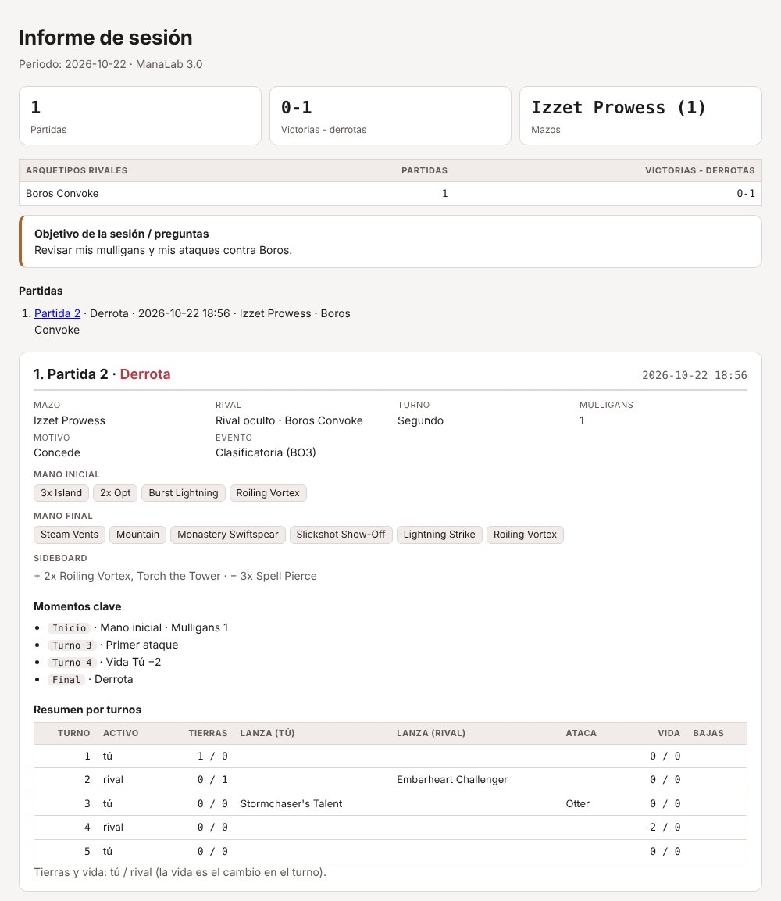
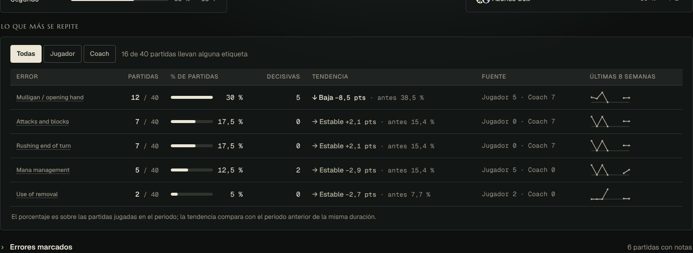

Cómo revisar a un alumno con ManaLab
Tu alumno juega como siempre y llega a la clase con sus partidas ya guardadas. Así dedicas la sesión a sus decisiones, no a pedirle capturas ni a reconstruir lo que pasó.
Versión 2.3.2 · ZIP · otras versiones
Tu alumno necesita ManaLab para crear el informe. Tú no lo necesitas para leerlo.
Requisitos: Windows 10 u 11. Descomprime el ZIP y abre ManaLab.exe. No hace falta instalar nada.
Antes de descomprimir, botón derecho en el ZIP › Propiedades › marca Desbloquear › Aceptar. Si aun así sale un aviso, pulsa Más información › Ejecutar de todas formas.

Informe de sesión con datos de ejemplo.
Más clase dedicada a las decisiones, menos preparación
ManaLab es un tracker gratis para MTG Arena y Magic Online. Guarda solo las manos iniciales, los mulligans, si empezó primero o segundo, el mazo del rival y una repetición de cada partida.
Menos preparación
El alumno elige las partidas y te envía un solo informe.
Decisiones visibles
Ves la mano, el mulligan y los momentos clave de cada partida.
Errores que se repiten
Las etiquetas muestran qué falla una y otra vez, y cómo evoluciona en 30 o 90 días.
Sideboard con datos
El alumno guarda su plan por matchup y ves qué cambios hizo de verdad.
El programa es gratis y no necesita cuenta. Tu alumno lo necesita para crear cualquiera de estos archivos; tú solo necesitas instalarlo si quieres usar el modo Equipo o abrir partidas exportadas.
Elige cómo trabajar
Informe de sesión
- Qué recibes
- Un archivo con las partidas elegidas
- ¿Necesitas ManaLab?
- No, se abre en el navegador
- Mejor para
- Clases sueltas
Exportar para el coach
- Qué recibes
- Resumen, matchups, errores y partidas con notas
- ¿Necesitas ManaLab?
- No, se abre en el navegador
- Mejor para
- Primera clase o revisión general
Archivo .manalab
- Qué recibes
- Un match completo, con todas sus partidas y su repetición
- ¿Necesitas ManaLab?
- Sí
- Mejor para
- Estudiar un match a fondo
Modo Equipo
- Qué recibes
- Partidas, capturas y notas en una carpeta compartida
- ¿Necesitas ManaLab?
- Sí
- Mejor para
- Alumnos habituales
Pásale estos pasos a tu alumno
La preparación le lleva unos minutos si ya tiene partidas guardadas.
- Instalar ManaLab desde manalab.es y dejarlo abierto mientras juega.
- Jugar con normalidad. Para marcar una decisión dudosa, pulsar F8 (la tecla por defecto): guarda una captura de ese momento.
- Marcar sus errores. En la pestaña Notas de cada partida, añadir etiquetas y escribir las dudas.
- Elegir qué revisar. En Partidas, abrir «⋯» › «Preparar sesión» y marcar las partidas.
- Crear y enviar el informe. Pulsar «Crear informe de sesión», guardarlo como PDF si quiere y enviárselo al coach.
El informe incluye manos, mulligans, momentos clave, resumen por turnos, notas y momentos destacados. Funciona sin conexión, y el alumno puede ocultar el nombre de sus rivales.
Para la primera clase, pide también «Exportar para el coach», en el menú «⋯» de Estadísticas. Te da su resumen, sus matchups y sus errores marcados.
Antes de la clase, instala ManaLab (manalab.es), gratis y sin cuenta. Juega con él abierto y pulsa F8 en cualquier jugada que te haga dudar. Luego, en Partidas, abre ⋯ › Preparar sesión, elige 3 partidas y envíame el informe.
Empieza por lo que se repite
Después baja a las partidas concretas. Este orden funciona bien para una clase de una hora:
- Tendencias. Abre «Lo que más se repite» en Estadísticas para elegir un solo tema de trabajo.
- Matchups. La tabla separa la partida 1 de las partidas tras el sideboard. Un asterisco indica menos de 10 partidas, así que no saques conclusiones firmes de esas filas.
- Manos y mulligans. Revísalos antes que las jugadas: ¿era una mano para quedarse?
- Repetición. Salta a los momentos clave y comenta las decisiones del tema elegido.
- Sideboard. Compara su plan con lo que de verdad metió y sacó.

«Lo que más se repite» en Estadísticas, con datos de ejemplo.
Con el modo Equipo ves cada partida con el mismo detalle que el alumno: manos, capturas con notas (si las comparte), repetición y mazo del rival.
Deja uno o dos objetivos, no una lista larga
Así la próxima clase puede empezar comprobando si mejoró.
- Etiquetas: usa siempre los mismos nombres para que «Lo que más se repite» mida bien la evolución.
- Notas: en el modo Equipo, escribe tu nota en la pestaña Notas de la partida.
- Seguimiento: en la siguiente clase, mira ese error a 30 días antes de abrir partidas nuevas.
Cómo activar el modo Equipo
- Crea una carpeta en Google Drive, Dropbox u OneDrive y compártela con tu alumno con permiso de edición (Editor), porque los dos escribís en ella.
- Cada uno abre Ajustes › Equipo e IA y elige la carpeta, su nombre y su rol: jugador o coach.
- Pulsad «Sincronizar ahora».
En Google Drive, la carpeta que te comparten aparece en «Compartido conmigo», que no se sincroniza con el ordenador. Quien la recibe debe añadirla a Mi unidad (botón derecho › Organizar › Añadir acceso directo) y marcarla como disponible sin conexión; si no, ManaLab no la ve. Con Dropbox u OneDrive, comprobad que la carpeta está sincronizada en el ordenador.
Cada persona escribe solo en su propia subcarpeta. Por defecto, ManaLab publica todas las partidas de tu alumno en la carpeta compartida; él puede ocultar los nombres de los rivales, desactivar que se compartan las capturas o dejar de compartir del todo.
Cómo le llega tu nota al alumno
Abre la pantalla Equipo, elige a tu alumno y una partida, y escribe en la caja «Tu nota de coach para esta partida…» de su pestaña Notas. La nota se guarda en la carpeta compartida al salir de la caja; para eso no hace falta «Sincronizar ahora». Tu alumno la ve en la pestaña Notas de esa partida cuando su servicio de carpetas (Google Drive, Dropbox u OneDrive) haya sincronizado el archivo y abra la pestaña.
Qué tener en cuenta con Magic Online
Revisar a un alumno funciona con los dos juegos. En Magic Online conviene tener en cuenta cuatro cosas:
- Sideboard: el alumno debe confirmar sus cambios entre partidas con un clic («Usar este cambio», «Sin cambios» o «Editar»). Las partidas que nunca se confirman no cuentan en los cambios de sideboard que se ven en Sideboard.
- Repetición: las fases y las cartas giradas que no están confirmadas llevan la marca ≈, porque pueden no ser exactas.
- Nombres de mazo: un mazo de Magic Online normalmente sale con el nombre que el alumno le puso en Magic Online; si la lista no coincide exactamente, sale por sus colores.
- Importaciones: importar un registro no corrige el sideboard de las partidas ya guardadas.
En Arena hay que activar Opciones › Cuenta › «Detailed Logs (Plugin Support)» una vez y reiniciar el juego. En Magic Online no hay nada que activar.
Antes de empezar
¿Cuesta algo?
El programa es gratis. Lo único de pago es el análisis de derrotas con IA, que no hace falta para nada de esta guía.
¿Mi alumno comparte todo su historial?
En el informe y en el archivo .manalab comparte solo lo que elige. En el modo Equipo, ManaLab publica todas sus partidas en vuestra carpeta compartida salvo que deje de compartir; puede ocultar los nombres de los rivales y desactivar que se compartan las capturas.
¿Cuentan sus partidas en mis estadísticas?
No. Las partidas de otro jugador se quedan marcadas y no cuentan en las tuyas.
¿Qué no incluye una partida importada?
Capturas y análisis con IA. Sí trae repetición, manos, mulligans, mazo, notas y etiquetas.
¿Qué necesito?
ManaLab funciona en Windows 10 y 11. Los informes se abren en cualquier navegador, así que para leerlos no necesitas instalar nada.
¿Y si echo algo de menos?
Escribe a manalab.app@gmail.com. Las herramientas para coaches se están construyendo con lo que nos pidáis.
El programa es gratis. Solo el análisis con IA es de pago
El análisis con IA de tus derrotas cuesta 5 € al mes y paga el servicio de IA que usa. Todo lo demás, incluido todo lo de esta página, es gratis. ¿Quieres probarlo antes? Pide una prueba gratis por correo.